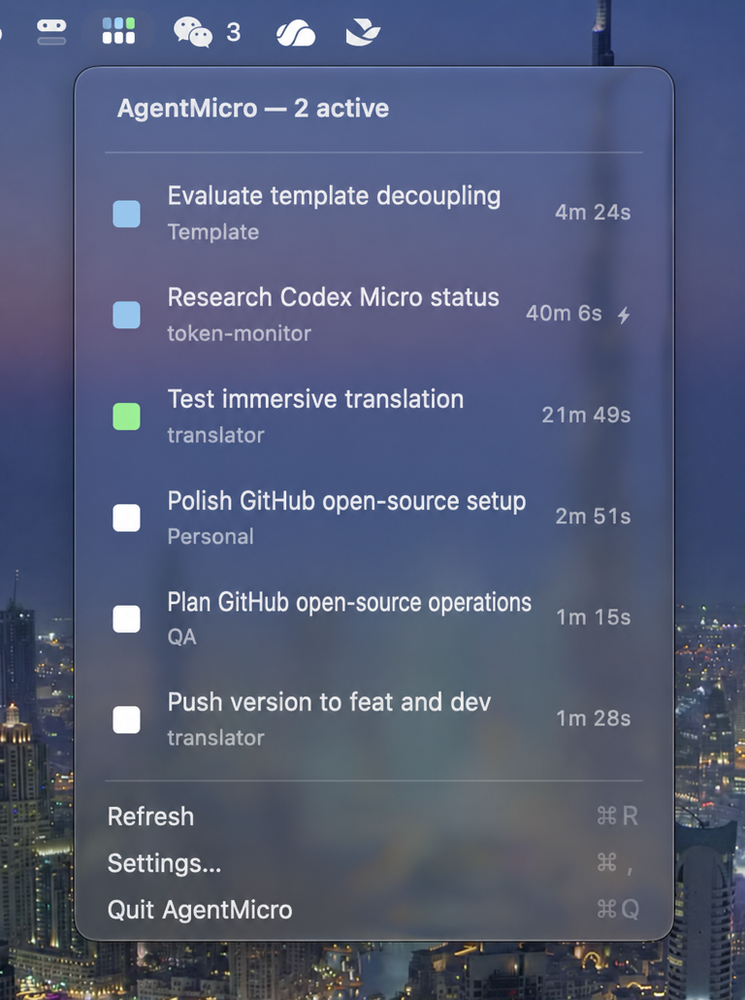

Know what needs you
See thinking, unread results, input requests, errors, and idle tasks at a glance.
A LOCAL-FIRST COMPANION FOR CODEX
Track parallel Codex tasks, projects, and results without reopening Codex.
Free and open source · macOS 14+ · Codex Desktop or CLI

See thinking, unread results, input requests, errors, and idle tasks at a glance.
Open the matching Codex Desktop conversation directly from the task menu.
AgentMicro reads local session metadata. It never uploads prompts, code, responses, or task history.
A CLEARER QUEUE
Working tasks stay first. Each row adds the project, current-turn duration, and a fast-mode marker, so you can decide where to return without searching through windows.
PRIVATE BY DESIGN
Base mode needs no Accessibility permission and no account. Optional enhanced detection is explicitly enabled, reads visible local labels only, and never clicks, types, or approves anything for you.
Independent, community-maintained, and not affiliated with OpenAI or CodexBar.